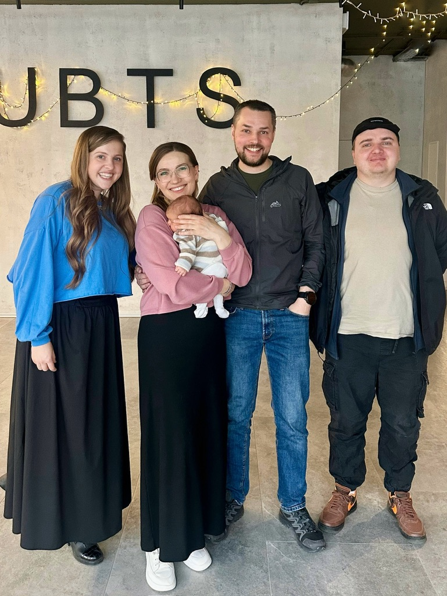
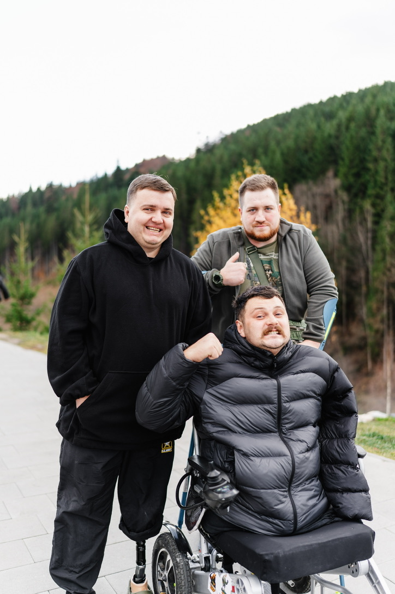

Про Місію
1951
Рік заснування місії
191+
Країн світу
1991
Служимо в Україні
Наша місія має багаторічну історію допомоги та духовного наставництва по всьому світу. Сьогодні в Україні ми об'єднали зусилля, щоб служити тим, хто стоїть на захисті нашої держави.


Мій Шлях:
Від розвідника до місіонера
Мене звати Олександр. Під час навчання в університеті я прийшов до Христа завдяки служінню CRU — один зі співробітників місії поділився зі мною Євангелієм.
Повномасштабне вторгнення 2022 року змінило все. Мене мобілізували, і я служив розвідником у штурмовій бригаді. Під час одного з бойових завдань я отримав важке поранення і втратив кінцівку.
Під час відновлення я познайомився з багатьма побратимами, які перебували в пошуку сенсу. Я зрозумів, що не можу мовчати — я хочу йти поруч з тими, хто страждає. Лише Христос може зцілити найглибші рани.
Наше Бачення
WIN
Донести Євангеліє до ветеранів через стосунки, свідчення та щире служіння їхнім потребам.
BUILD
Допомогти їм зростати у вірі, знайти сенс, спокій та внутрішню стабільність.
SEND
Надихати ставати світлом та прикладом відновлення у своїх громадах.
Наша Діяльність
1. Турбота в госпіталях
Я приношу корисні речі, але найголовніше — час для вислуховування та спільної молитви там, де біль найгостріший.


2. Подкаст "Голос Надії"
Відкриті розмови про віру та війну для тисяч воїнів у партнерстві з Українською Баптистською Теологічною Семінарією (УБТС).
3. Ретрити "Коло довіри"
Це «коло своїх», де ветерани можуть по-справжньому розслабитися. Психологічне розвантаження у горах, духовне відновлення та спільна молитва далеко від рутини та сірої буденності.


Наша Команда
Більшість із нас особисто були дотичні до війни, пройшли через втрати, випробування та військову службу. Ми знаємо, що таке біль, і саме тому об'єднали свої зусилля.
Зараз ми разом будуємо міцне служіння для ветеранів. Наша мета — стати надійним духовним тилом, підтримкою та дружньою спільнотою для кожного, хто повертається з фронту.
Підтримати нас
Наше служіння повністю фінансується завдяки щедрій підтримці таких людей, як ви. Стаючи нашим фінансовим партнером, ви безпосередньо інвестуєте у духовне та психологічне відновлення ветеранів України. Чи готові ви стати частиною нашої команди підтримки?
Переказ через Приват24 або Monobank:
В меню "Платежі" (у Monobank: "Платіж за IBAN") введіть рахунок:
UA063052990000026004045007863
Система автоматично знайде отримувача. Перевірте:
Місія "Україна для Христа"
У полі «Коментар до платежу» (або «Залучив ПІБ») обов'язково вкажіть мій внутрішній номер в місії (можна скопіювати його нижче):
5544
Вкажіть бажану суму пожертви. Призначення платежу зазвичай формується автоматично.
Підтвердіть платіж.
ЩИРО ДЯКУЄМО ЗА ВАШУ ПІДТРИМКУ!
Оновлення служіння та зв'язок
Кожного місяця я надсилаю молитовні листи з новинами. Підпишіться на мої оновлення.
"Жниво справді велике, та робітників мало..." (Матвія 9:37)